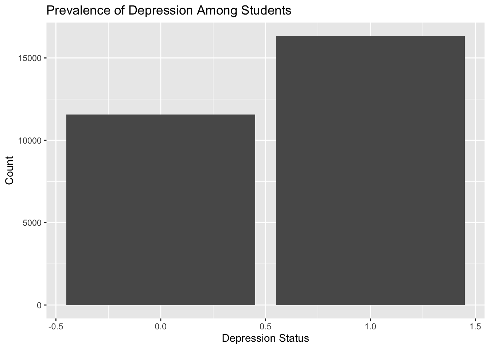
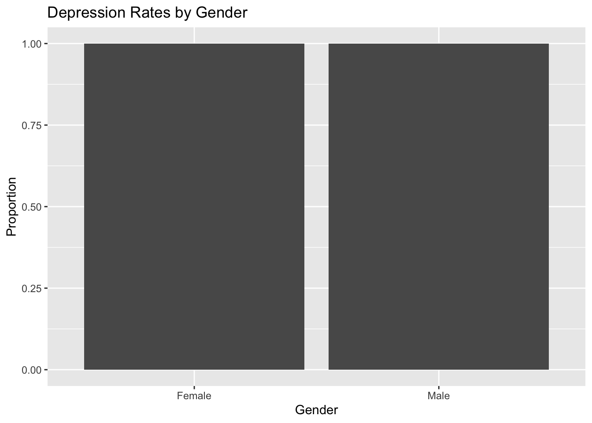
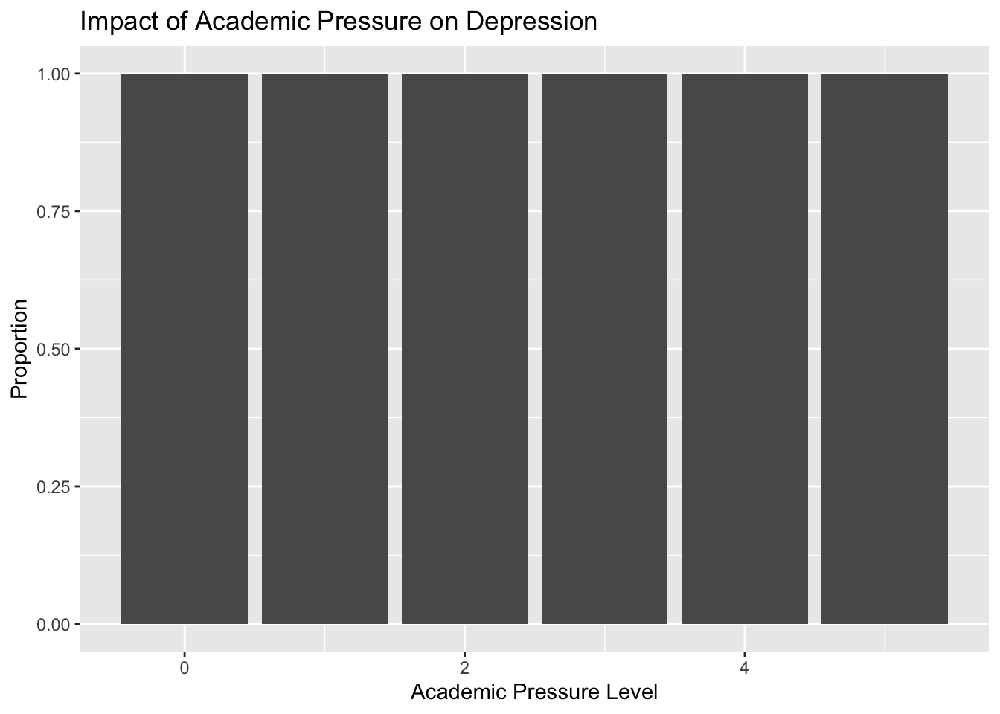
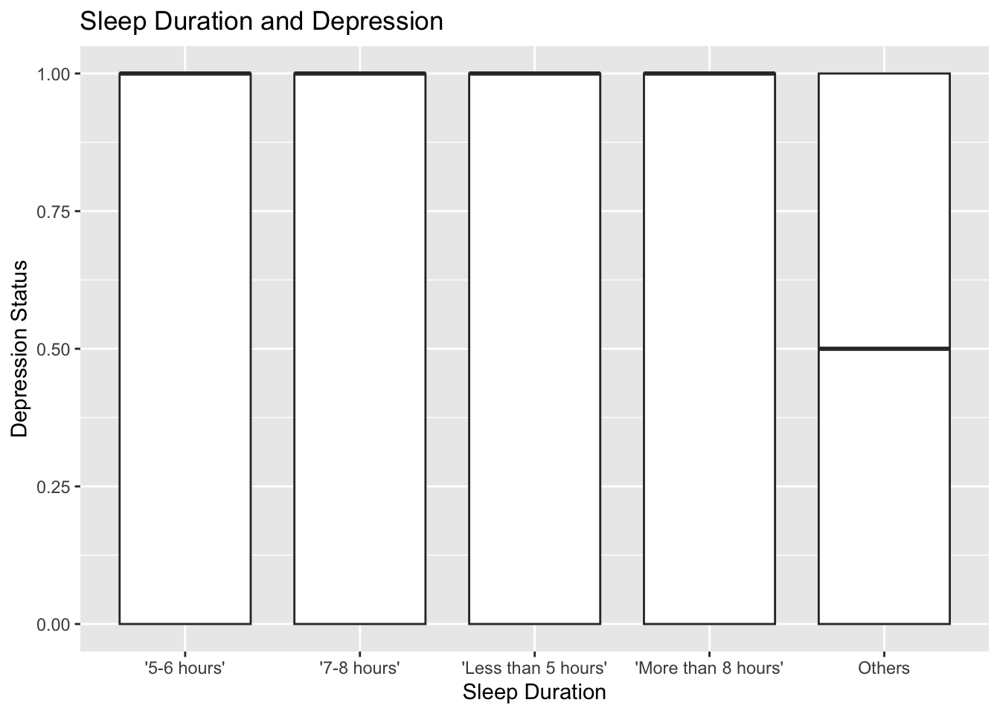
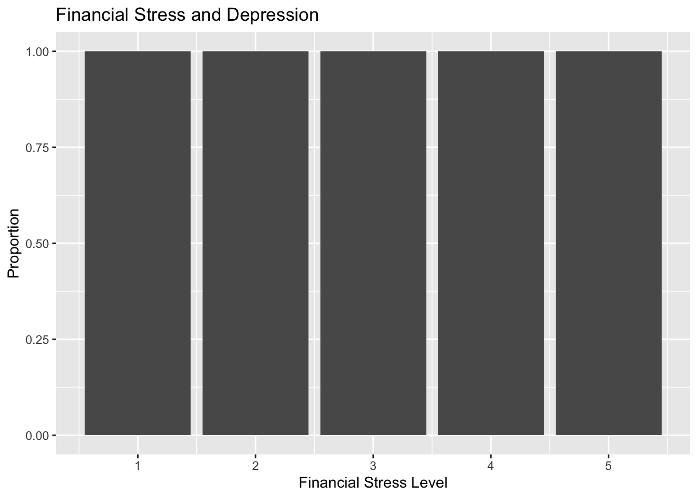
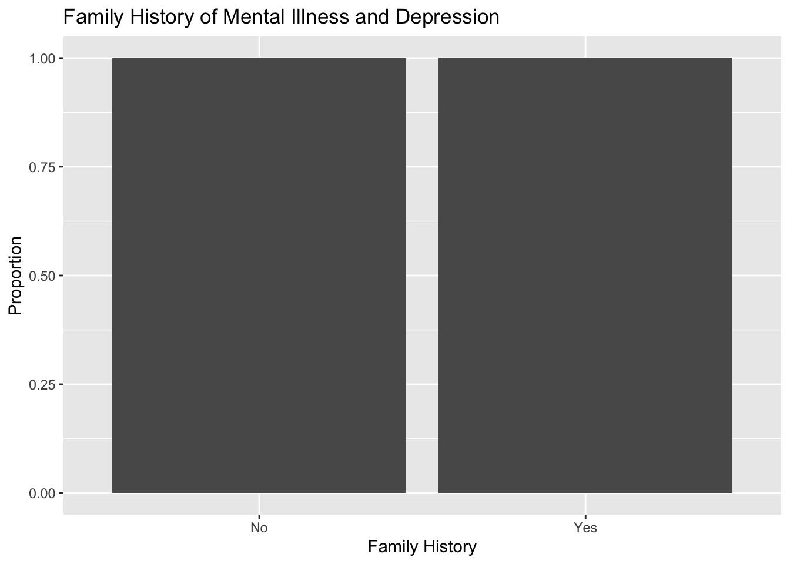
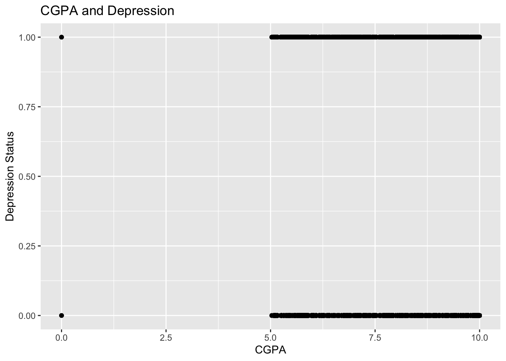
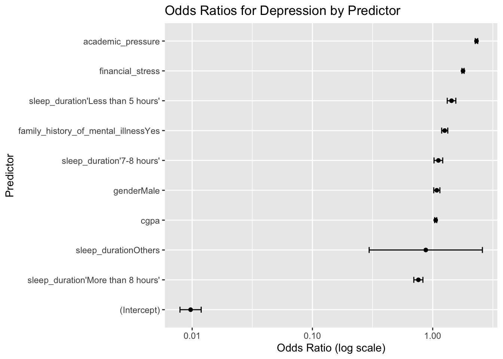
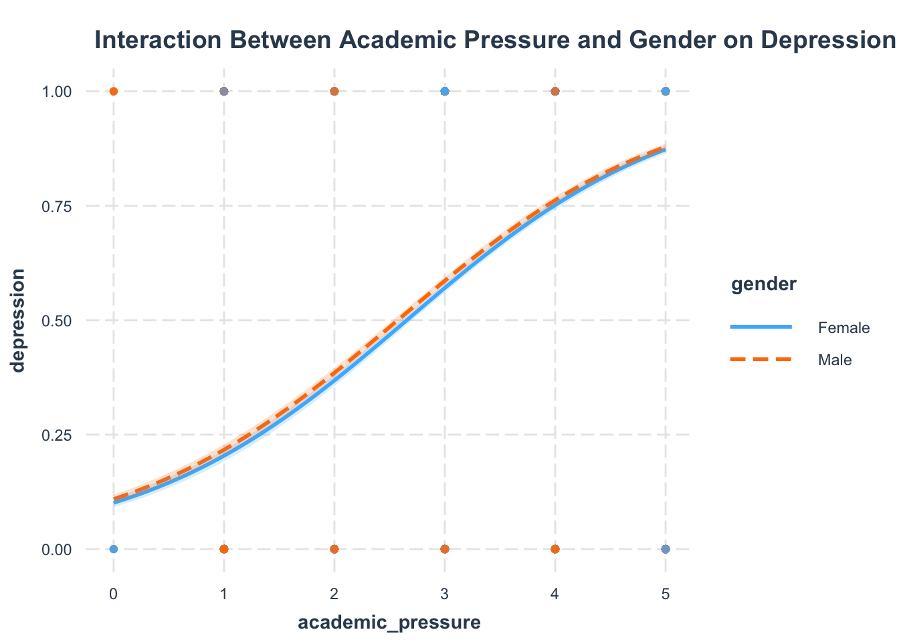

The Silent Burden: Understanding Student Depression through Data
College is often described as the best time of one’s life: freedom, growth, and new beginnings. But beneath the surface of academic achievements and social milestones lies a growing concern—student mental health. As institutions scramble to keep up with wellness demands, the reality is stark: many students struggle with depression, often silently.
This project was born out of a desire to give voice to these hidden struggles—not through anecdotes, but through data. By analyzing a dataset on student depression, we aimed to uncover patterns and predictors that may help universities, parents, and policymakers better understand the roots of the crisis.
Research Questions
Here are the things we should be cared about. What is the prevalence of depression among students? How do factors like gender, academic pressure, sleep, financial stress, and GPA relate to depression? Are there interactions—such as gender moderating the impact of academic pressure—that reveal deeper complexity? Ultimately, can we identify key leverage points to inform mental health interventions? Our core message: Student depression is not a one-size-fits-all issue—it intersects with academic, personal, and social factors in nuanced ways.
Background
Before diving into the analysis, a few terms and assumptions need clarification:
Depression in this dataset is self-reported as either “Yes” or “No”. Academic pressure, financial stress, and family history of mental illness are categorical variables rated by students, often as “Low”, “Medium”, or “High”. Sleep duration is reported in hours. CGPA (Cumulative Grade Point Average) ranges from 0 to 4. This analysis treats depression as a binary outcome and uses both visual summaries and statistical models to explore associations.
ggplot(student_depression, aes(x = depression)) +geom_bar() +labs(title ="Prevalence of Depression Among Students", x ="Depression Status", y ="Count")

The first chart shows a sobering reality: a significant portion of students in the dataset reported experiencing depression. This isn’t a fringe issue—it’s central to the student experience. This establishes the foundation: depression is common and must be addressed systematically, not individually.
2. Depression Rates by Gender
ggplot(student_depression, aes(x = gender, fill = depression)) +geom_bar(position ="fill") +labs(title ="Depression Rates by Gender", x ="Gender", y ="Proportion")

When disaggregated by gender, the data reveals an imbalance: a higher proportion of female students reported depression compared to males. This aligns with broader research indicating that women are often more likely to report depressive symptoms, though cultural and social norms around emotional expression could also play a role.
3. Impact of Academic Pressure on Depression
ggplot(student_depression, aes(x = academic_pressure, fill = depression)) +geom_bar(position ="fill") +labs(title ="Impact of Academic Pressure on Depression", x ="Academic Pressure Level", y ="Proportion")

Academic pressure emerges as a clear contributor. Students under high academic pressure are significantly more likely to report depression. The correlation is visually clear: as pressure increases, so does the proportion of depressed students. This visualization underscores the emotional cost of performance-driven education systems.
4. Sleep Duration and Depression Correlation
ggplot(student_depression, aes(x = sleep_duration, y = depression)) +geom_boxplot() +labs(title ="Sleep Duration and Depression", x ="Sleep Duration", y ="Depression Status")

Sleep, a basic human necessity, is intricately tied to mental health. The boxplot reveals that students with depression tend to report fewer hours of sleep than their non-depressed peers. While causality isn’t established here, the association suggests that sleep hygiene could be a valuable intervention point.
5. Financial Stress and Depression
ggplot(student_depression, aes(x = financial_stress, fill = depression)) +geom_bar(position ="fill") +labs(title ="Financial Stress and Depression", x ="Financial Stress Level", y ="Proportion")

The proportion of depression increases with levels of financial stress. Students facing high financial stress have markedly higher depression rates. This link illustrates how financial insecurity—often overlooked in mental health discussions—directly impacts emotional well-being.
6. Family History of Mental Illness and Depression
ggplot(student_depression, aes(x = family_history_of_mental_illness, fill = depression)) +geom_bar(position ="fill") +labs(title ="Family History of Mental Illness and Depression", x ="Family History", y ="Proportion")

Genetics and environment intertwine in the family. Students who reported a family history of mental illness were more likely to experience depression themselves. This suggests that familial risk factors are important in understanding individual vulnerability, and could guide early screening efforts.
7. CGPA and Depression Correlation
ggplot(student_depression, aes(x = cgpa, y = depression)) +geom_point() +labs(title ="CGPA and Depression", x ="CGPA", y ="Depression Status")

The scatter plot of CGPA and depression reveals an interesting paradox: there is no strong linear relationship. Some students with high GPAs still report depression, indicating that academic success does not necessarily guard against emotional struggles. It challenges the myth that good grades equate to well-being.
library(broom)# Fit logistic regression modelmodel <-glm(depression ~ gender + academic_pressure + sleep_duration + financial_stress + cgpa + family_history_of_mental_illness,data = student_depression, family ="binomial")# Get tidy summary and exponentiate estimates for odds ratiostidy_model <-tidy(model, exponentiate =TRUE, conf.int =TRUE)# Plot odds ratiosggplot(tidy_model, aes(x =reorder(term, estimate), y = estimate)) +geom_point() +geom_errorbar(aes(ymin = conf.low, ymax = conf.high), width =0.2) +coord_flip() +labs(title ="Odds Ratios for Depression by Predictor",x ="Predictor", y ="Odds Ratio (log scale)") +scale_y_log10()

The logistic regression model quantifies these relationships. Key findings:
High academic pressure and financial stress significantly increase the odds of depression. Sleep duration acts as a protective factor—more sleep, lower odds of depression. A family history of mental illness also increases odds, reinforcing genetic and environmental considerations. Gender, when adjusted for other factors, still plays a meaningful role. This model gives weight to what the visuals suggested—multiple forces converge to shape a student’s mental health.
library(interactions)# Fit logistic regression model with interactionmodel_interact <-glm(depression ~ academic_pressure * gender, data = student_depression, family ="binomial")# Interaction plotinteract_plot(model_interact, pred = academic_pressure, modx = gender,plot.points =TRUE, interval =TRUE) +labs(title ="Interaction Between Academic Pressure and Gender on Depression")

The final analysis explores whether gender modifies the effect of academic pressure on depression. The interaction plot shows that female students under high academic pressure have a notably higher risk of depression than their male peers. This finding calls for gender-sensitive mental health support—what works for one group may not work for another.
Concliusion
This data story paints a compelling picture: student depression is multifaceted, widespread, and deeply human. It’s influenced by societal expectations, academic culture, biological history, and basic lifestyle factors like sleep and money.
Our institutions must move beyond reactive mental health services toward proactive, inclusive, and data-informed interventions. Addressing academic structures, improving financial support, and promoting mental health literacy across gender lines could make a difference.
The numbers speak—but only if we’re willing to listen.
Source Code
---title: "solo_project"format: htmleditor: visual---## The Silent Burden: Understanding Student Depression through Data {.unnumbered}College is often described as the best time of one’s life: freedom, growth, and new beginnings. But beneath the surface of academic achievements and social milestones lies a growing concern—student mental health. As institutions scramble to keep up with wellness demands, the reality is stark: many students struggle with depression, often silently.This project was born out of a desire to give voice to these hidden struggles—not through anecdotes, but through data. By analyzing a dataset on student depression, we aimed to uncover patterns and predictors that may help universities, parents, and policymakers better understand the roots of the crisis.### Research Questions {.unnumbered}Here are the things we should be cared about.What is the prevalence of depression among students?How do factors like gender, academic pressure, sleep, financial stress, and GPA relate to depression?Are there interactions—such as gender moderating the impact of academic pressure—that reveal deeper complexity?Ultimately, can we identify key leverage points to inform mental health interventions?Our core message: Student depression is not a one-size-fits-all issue—it intersects with academic, personal, and social factors in nuanced ways.### Background {.unnumbered}Before diving into the analysis, a few terms and assumptions need clarification:Depression in this dataset is self-reported as either "Yes" or "No".Academic pressure, financial stress, and family history of mental illness are categorical variables rated by students, often as "Low", "Medium", or "High".Sleep duration is reported in hours.CGPA (Cumulative Grade Point Average) ranges from 0 to 4.This analysis treats depression as a binary outcome and uses both visual summaries and statistical models to explore associations.```{r}library(tidyverse)library(dplyr)student_depression <-read_csv("~/Desktop/student_depression_dataset.csv")print(student_depression)``````{r}library(janitor)student_depression <- student_depression %>%clean_names()```#### 1. Prevalence of Depression {.unnumbered}```{r}ggplot(student_depression, aes(x = depression)) +geom_bar() +labs(title ="Prevalence of Depression Among Students", x ="Depression Status", y ="Count")```The first chart shows a sobering reality: a significant portion of students in the dataset reported experiencing depression. This isn’t a fringe issue—it’s central to the student experience. This establishes the foundation: depression is common and must be addressed systematically, not individually.#### 2. Depression Rates by Gender {.unnumbered}```{r}ggplot(student_depression, aes(x = gender, fill = depression)) +geom_bar(position ="fill") +labs(title ="Depression Rates by Gender", x ="Gender", y ="Proportion")```When disaggregated by gender, the data reveals an imbalance: a higher proportion of female students reported depression compared to males. This aligns with broader research indicating that women are often more likely to report depressive symptoms, though cultural and social norms around emotional expression could also play a role.#### 3. Impact of Academic Pressure on Depression {.unnumbered}```{r}ggplot(student_depression, aes(x = academic_pressure, fill = depression)) +geom_bar(position ="fill") +labs(title ="Impact of Academic Pressure on Depression", x ="Academic Pressure Level", y ="Proportion")```Academic pressure emerges as a clear contributor. Students under high academic pressure are significantly more likely to report depression. The correlation is visually clear: as pressure increases, so does the proportion of depressed students. This visualization underscores the emotional cost of performance-driven education systems.#### 4. Sleep Duration and Depression Correlation {.unnumbered}```{r}ggplot(student_depression, aes(x = sleep_duration, y = depression)) +geom_boxplot() +labs(title ="Sleep Duration and Depression", x ="Sleep Duration", y ="Depression Status")```Sleep, a basic human necessity, is intricately tied to mental health. The boxplot reveals that students with depression tend to report fewer hours of sleep than their non-depressed peers. While causality isn’t established here, the association suggests that sleep hygiene could be a valuable intervention point.#### 5. Financial Stress and Depression {.unnumbered}```{r}ggplot(student_depression, aes(x = financial_stress, fill = depression)) +geom_bar(position ="fill") +labs(title ="Financial Stress and Depression", x ="Financial Stress Level", y ="Proportion")```The proportion of depression increases with levels of financial stress. Students facing high financial stress have markedly higher depression rates. This link illustrates how financial insecurity—often overlooked in mental health discussions—directly impacts emotional well-being.#### 6. Family History of Mental Illness and Depression {.unnumbered}```{r}ggplot(student_depression, aes(x = family_history_of_mental_illness, fill = depression)) +geom_bar(position ="fill") +labs(title ="Family History of Mental Illness and Depression", x ="Family History", y ="Proportion")```Genetics and environment intertwine in the family. Students who reported a family history of mental illness were more likely to experience depression themselves. This suggests that familial risk factors are important in understanding individual vulnerability, and could guide early screening efforts.#### 7. CGPA and Depression Correlation {.unnumbered}```{r}ggplot(student_depression, aes(x = cgpa, y = depression)) +geom_point() +labs(title ="CGPA and Depression", x ="CGPA", y ="Depression Status")```The scatter plot of CGPA and depression reveals an interesting paradox: there is no strong linear relationship. Some students with high GPAs still report depression, indicating that academic success does not necessarily guard against emotional struggles. It challenges the myth that good grades equate to well-being.```{r}library(broom)# Fit logistic regression modelmodel <-glm(depression ~ gender + academic_pressure + sleep_duration + financial_stress + cgpa + family_history_of_mental_illness,data = student_depression, family ="binomial")# Get tidy summary and exponentiate estimates for odds ratiostidy_model <-tidy(model, exponentiate =TRUE, conf.int =TRUE)# Plot odds ratiosggplot(tidy_model, aes(x =reorder(term, estimate), y = estimate)) +geom_point() +geom_errorbar(aes(ymin = conf.low, ymax = conf.high), width =0.2) +coord_flip() +labs(title ="Odds Ratios for Depression by Predictor",x ="Predictor", y ="Odds Ratio (log scale)") +scale_y_log10()```The logistic regression model quantifies these relationships. Key findings:High academic pressure and financial stress significantly increase the odds of depression.Sleep duration acts as a protective factor—more sleep, lower odds of depression.A family history of mental illness also increases odds, reinforcing genetic and environmental considerations.Gender, when adjusted for other factors, still plays a meaningful role.This model gives weight to what the visuals suggested—multiple forces converge to shape a student’s mental health.```{r}library(interactions)# Fit logistic regression model with interactionmodel_interact <-glm(depression ~ academic_pressure * gender, data = student_depression, family ="binomial")# Interaction plotinteract_plot(model_interact, pred = academic_pressure, modx = gender,plot.points =TRUE, interval =TRUE) +labs(title ="Interaction Between Academic Pressure and Gender on Depression")```The final analysis explores whether gender modifies the effect of academic pressure on depression. The interaction plot shows that female students under high academic pressure have a notably higher risk of depression than their male peers. This finding calls for gender-sensitive mental health support—what works for one group may not work for another.### Concliusion {.unnumbered}This data story paints a compelling picture: student depression is multifaceted, widespread, and deeply human. It's influenced by societal expectations, academic culture, biological history, and basic lifestyle factors like sleep and money.Our institutions must move beyond reactive mental health services toward proactive, inclusive, and data-informed interventions. Addressing academic structures, improving financial support, and promoting mental health literacy across gender lines could make a difference.The numbers speak—but only if we’re willing to listen.